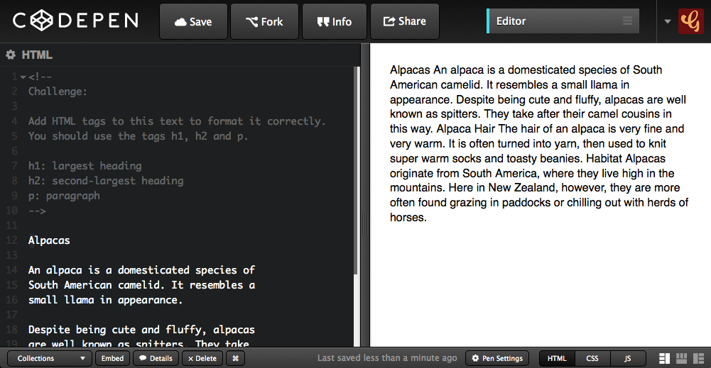

Coding Content
Putting content on your page with HTML
HTML With Alpacas
Open this link in a new tab: Alpacas Code
Keep it open! We are going to be using HTML
to make it look way better.
CodePen Editor

CodePen shows us our code on the left,
and the output on the right.
Alpaca Text Example
See the Pen Otter Challenge Demo by Gather Workshops (@gatherworkshops) on CodePen.
We will use code to make our output look like this.
Headings
Add <h1> and </h1> tags to make the Alpacas heading big and bold.
<h1>Alpacas</h1>
<h1> says “start the heading here”
</h1> says “end the heading here”
Subheadings
Now use <h2> tags to make Alpaca Hair and Habitat big.
<h2>Alpaca Hair</h2>
h1 is the biggest heading
h2 is the second biggest heading
h3 is the third biggest heading
h6 is the smallest heading
Paragraphs
Now use <p> tags to split up your paragraphs.
<p>
An alpaca is a domesticated species of
South American camelid. It resembles a
small llama in appearance.
</p>
Put a <p> before each paragraph,
and a </p> after each paragraph.
Links
Find the word Wikipedia in your code.
Turn it into a link using a tags, like this:
<a>Wikipedia</a>
Then add the href attribute to the opening tag.
<a href="#">Wikipedia</a>
This turns the link blue, but we need another step to make it clickable.
Link Attribute
We tell the link where to go when it’s clicked using href.
Find your opening <a> tag. Add in the href and link.
<a href="http://en.wikipedia.org/wiki/Alpaca">Wikipedia</a>
The only part we added was:
html
href="http://en.wikipedia.org/wiki/Alpaca"
Image Tags
Add an img tag to the very bottom of your code:
<img src="#" height="100">
src stands for “source”
Replace the # with a link to an image online.
height is the height of the image
This is optional, it is the height in pixels.
Image Source
Find an image online, and copy the link to it.
Replace the # as the src value, using paste:
<img src="http://place.com/photo.jpg" height="100">
Find and add at least 2 more images.
Final Result
Your own output window should now look like this:
Stuff We Covered
- Headings
Biggest is h1, smallest is h6, and size is based on heading importance - Paragraphs
Split our content up into manageable pieces. - Images
Don’t have a closing tag, and use thesrcattribute to define an image. - Links
Use thehrefattribute to link to another page on the web.

Coding Content: Complete!
Great, now it’s time to do some design…
Loading...